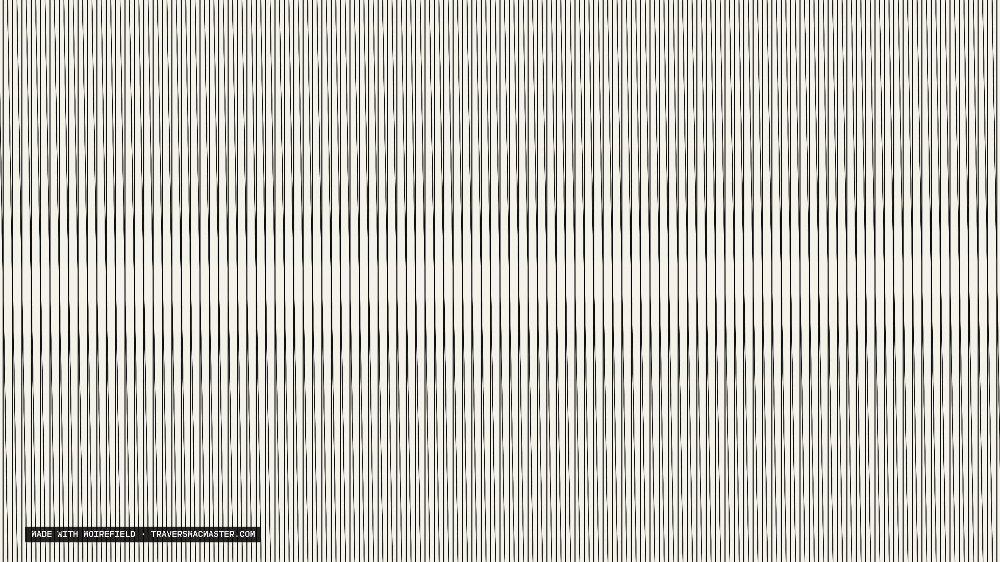
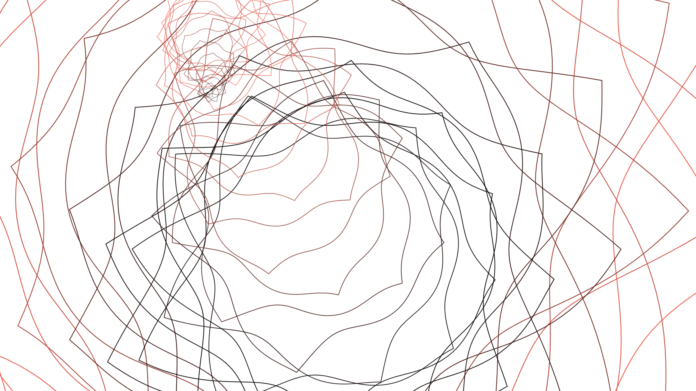
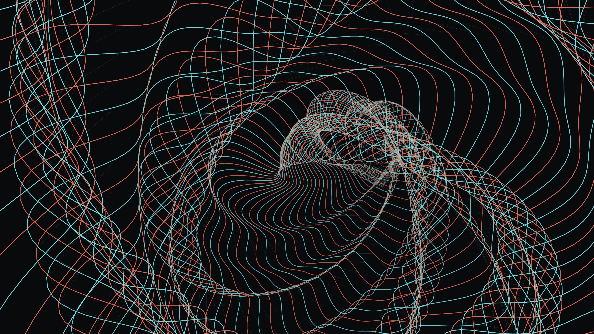
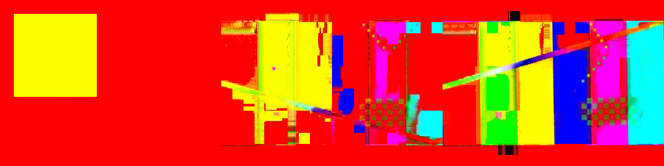
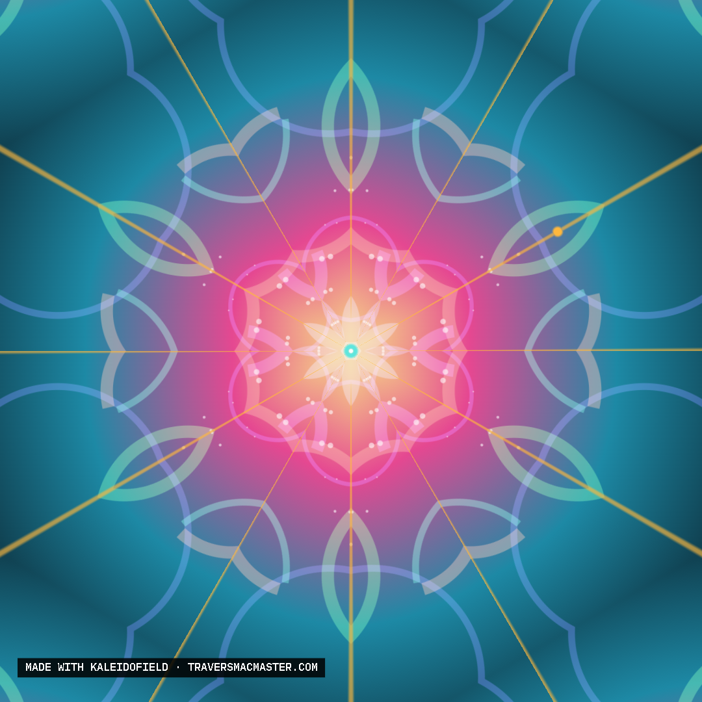
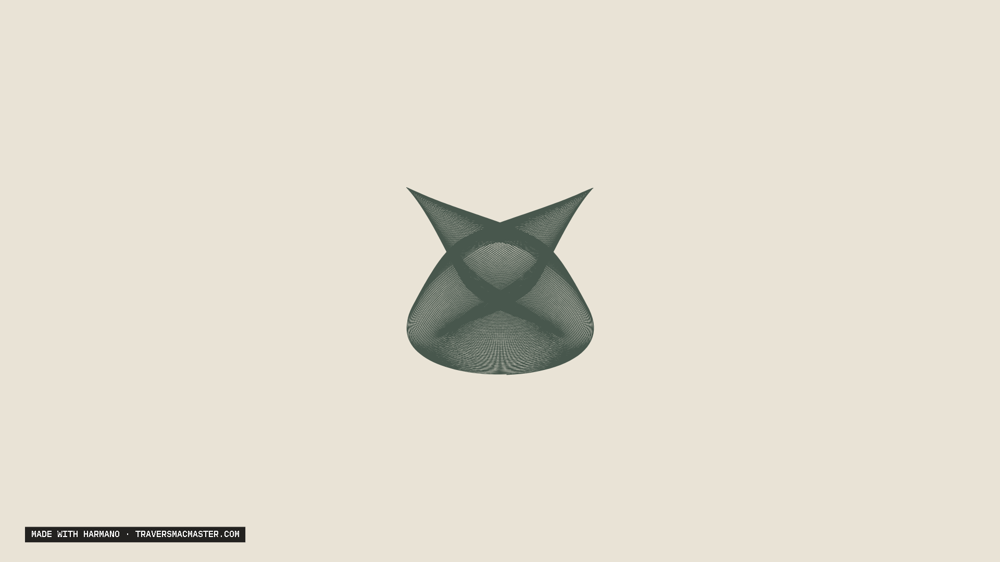
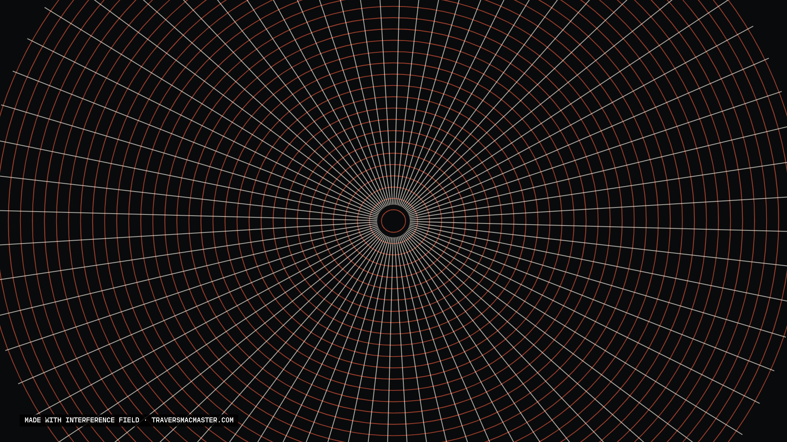
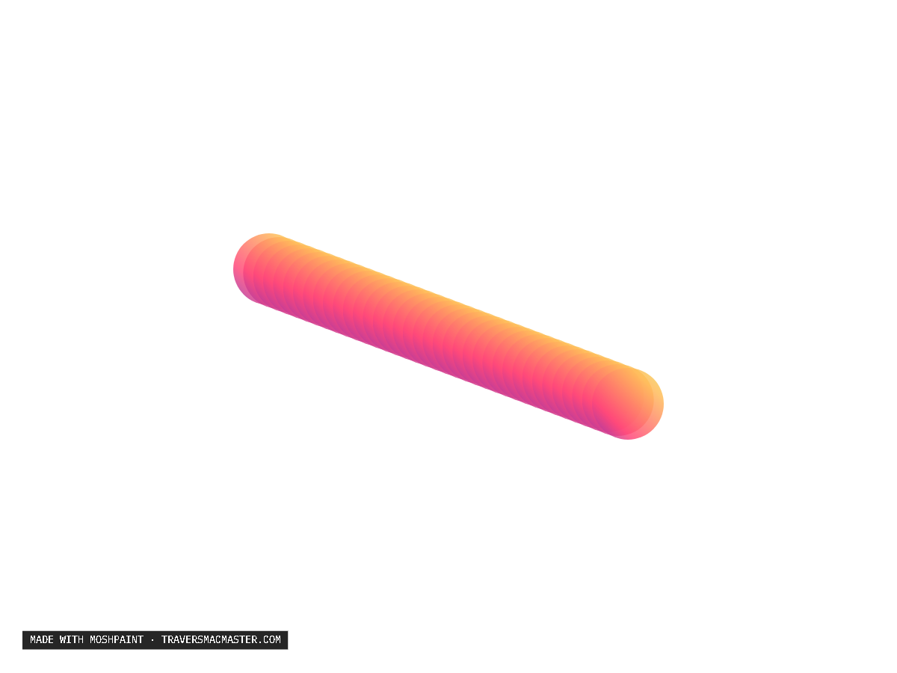
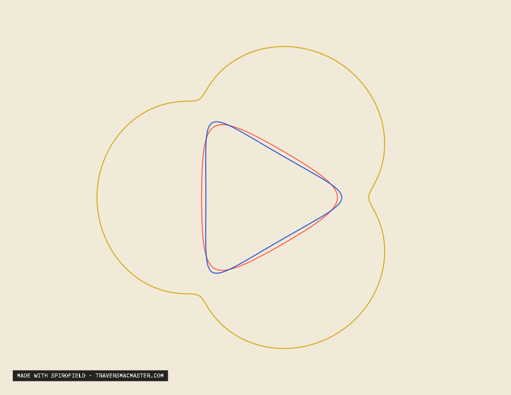
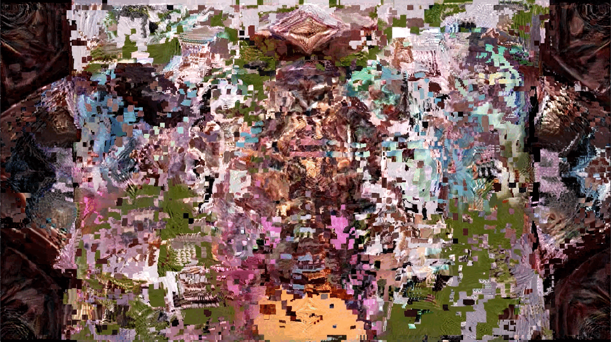

Works and Examples
Moving images, sound, and experiments from the studio.









Jellyglitch
Portrait studies
Motion studies
FROM THE STUDIO
Image, motion, and disruption.
Explore AuViMosh ⟶More work and process documentation will be added here.